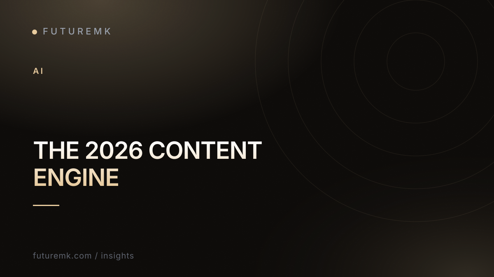

The 2026 Content Engine: Post Every Day Without Losing Your Soul
AI can 10x your output or turn your brand into forgettable sludge. The difference is the system. Here's the one we run.

Every brand now has access to the same AI tools. That's exactly why most AI content fails: when everyone prompts the same way, everyone sounds the same. The brands winning in 2026 aren't the ones using AI the most — they're the ones using it with a system that keeps their voice intact.
Here's the engine we use to publish daily without producing soulless filler.
The mistake everyone makes
They open a chatbot, type "write me a LinkedIn post about marketing," and ship whatever comes out. The result is technically fine and completely invisible — the digital equivalent of beige. The algorithm ignores it because readers ignore it.
AI is a force multiplier. If you multiply generic, you get more generic, faster.
The engine: Source → Shape → Sharpen → Ship
1. Source (this is the part nobody automates)
The raw material has to be yours. Real opinions, real client stories, real numbers, real mistakes. We keep a running "insight log" — a note where every useful thought, customer question, or result gets dropped in one line. AI can't invent your lived experience; it can only arrange it.
If a competitor could publish the exact same post, it wasn't worth publishing.
2. Shape
Now AI earns its keep. Feed it one raw insight and ask it to produce three structures, not three finished posts — a contrarian take, a how-to, and a story. You're using AI for architecture, not opinions.
3. Sharpen
Rewrite the opening line yourself, every time. The first sentence is the whole ballgame, and it's where AI is weakest — it defaults to throat-clearing. Cut the warm-up. Start at the tension.
4. Ship
Pair every post with one strong visual and publish on a fixed schedule. Consistency trains both the algorithm and your audience. Daily-ish beats sporadic-brilliant.
A repeatable weekly rhythm
- Monday: Mine last week's client calls and questions for 5 insights.
- Tue–Thu: Shape + sharpen one post per insight. 20 minutes each.
- Friday: Generate visuals, schedule the week ahead.
That's a full content week in roughly two focused hours — without sounding like a robot.
Where AI genuinely shines
- Repurposing. One good long post → a thread, three short captions, an email. This is AI's superpower and almost free leverage.
- Editing. "Make this tighter, cut 30%, keep my voice." Brutal and effective.
- Idea expansion. "Give me 10 angles on this one idea" beats staring at a blank page.
- Outlines. Structure first, words second.
Where AI will sink you
- Opinions and hot takes. Borrowed conviction reads as fake.
- Stories. Specifics are everything, and AI invents generic ones.
- Your first line. Write it yourself. Always.
The unfair advantage
The brands that win the next two years won't be the ones with the best prompts. They'll be the ones with the best inputs — a steady stream of real, specific, hard-won insight that AI can amplify. The tool is commoditized. Your perspective isn't.
Build the engine once, feed it your truth, and let AI handle the volume. That's how you post every day and still sound unmistakably like you.
Want a content engine built around your brand voice — set up, documented, and running? That's what we do.
/ Work with us
Want this done for your brand?
FutureMK builds the brand, the content, and the growth engine — end to end.